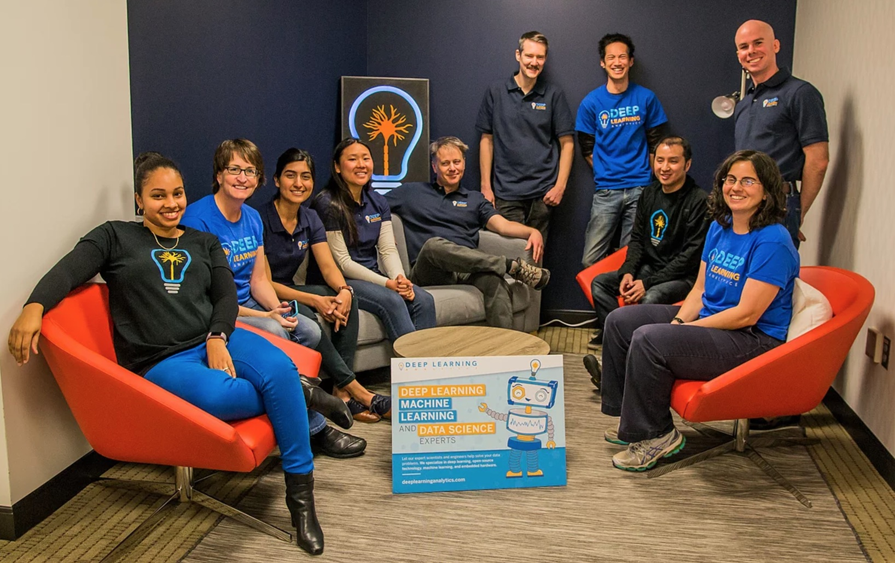
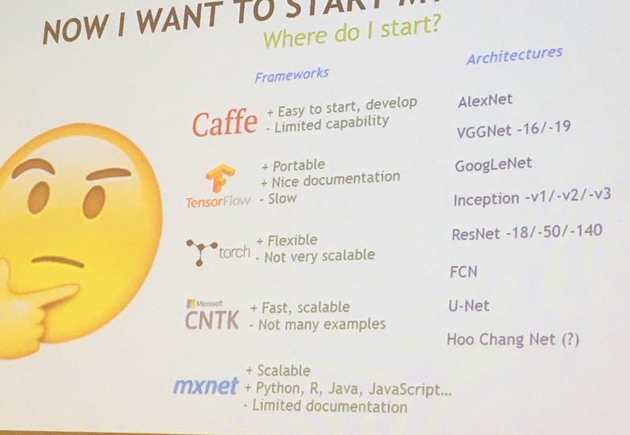
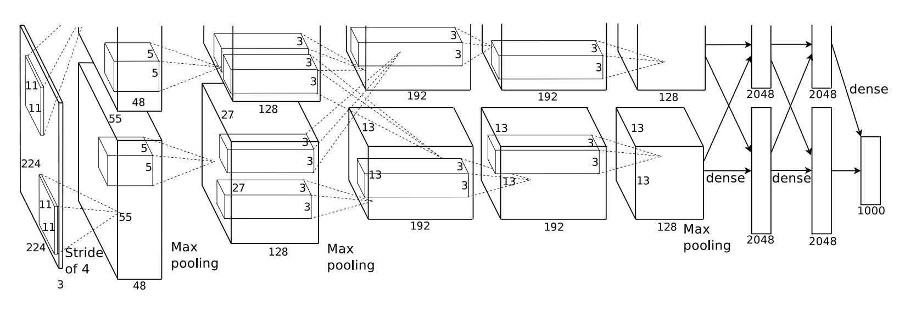
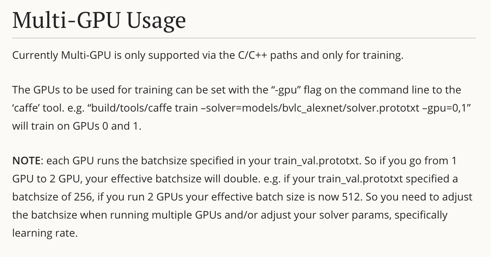
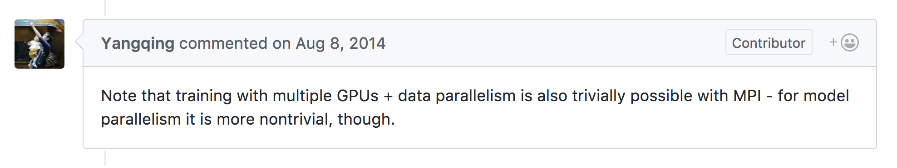

Caffe and TensorFlow at Deep Learning Analytics
Wednesday May 10, 2017
These are materials for a presentation given Wednesday May 10, 2017 at OSCON as part of TensorFlow Day. (slides)
Thank you!
Thanks to all the OSCON organizers and participants, and especially to the Google folks organizing TensorFlow Day, and everyone coming out for TensorFlow events! What fun!

I work at a company called Deep Learning Analytics, or DLA.
The advantage of a name like Deep Learning Analytics is that, assuming you've heard of deep learning, you immediately know something about what we do.
deeplearninganalytics.com
The disadvantage of a name like Deep Learning Analytics is that our URL is really long.

This is most of us at our Arlington location, just outside DC. We do a mix of government contracting and commercial work.
We have a cute robot mascot called DarLA.
DarLA the robot could be a metaphor for any machine learning system. You have to build the arms and the legs, and that's a good deal of work. There's also generally a lot of work in getting data to train the system with. But you also need a brain, and that's inevitably sort of the interesting part.
So what do you use for the brain?
warning: opinions
I'm going to comment on a few aspects of a few systems, based on what I've seen. Everybody involved in this space is incredibly smart, and probably correct in some ways even when I disagree.
- Caffe?
- TensorFlow?
The two systems I'll talk about are Caffe and TensorFlow.
I'm aware of Caffe 2 but I don't have anything to say about it today, aside from that it seems a lot like Caffe.

This is a picture of a slide from a talk some NVIDIA folks gave a couple weeks ago. I will now agree and disagree with it.
Caffe easy to start? I disagree, and I'll talk about why.
Caffe easy to develop? I disagree, and I'll talk about why.
Caffe limited capability? I agree, and I'll talk about why.
TensorFlow portable and nice documentation? I mostly agree.
TensorFlow slow? I think to the extent this is true, it doesn't matter, and I'll talk about some related considerations.
My colleagues have done some work in Torch as well, but I'm not going to talk about these others.
Easy to start?
So which framework makes it easier to get started?
pip install:
✘ Caffe
✔ TensorFlow
This is a convenience, but it's also really nice. There are advantages to compiling things yourself too. But for quickly getting started, this is great.
Even if you're happy to compile an optimized build for your system, having easy installation options available can be nice for setting up test environments, for example.
"Easy" models:
½ Caffe
✔ TensorFlow
By "easy" models, I mean models that are either completely pre-specified and pre-trained, or very easily specified by a very high-level API.
The Caffe model zoo might have been the first recognized collection of pre-trained models and model architecture specifications. One or two years ago, it might have been the best way to start working with an interesting deep net without going through the whole training process yourself.
Now, though, I think TensorFlow is really passing Caffe on this. You can get a number of pre-trained models already with just one line of Python, using tf.contrib.keras. Hopefully others will be able to match that ease of redistribution.
Further, TensorFlow's "canned models" in tf.contrib.learn provide a scikit-learn-like interface that Caffe never attempts.
Easy to develop?
What about ease of development?
API level:
- high? middle? low?
For development, it matters what level you want to work at. You can do a lot quickly if you can stay at a high level. But sometimes you need to get low-level to control details or do something slightly non-standard.
I think TensorFlow now is doing a better job than Caffe of providing API surfaces across a range of levels.
Caffe's API, at the protocol buffer text format level you have to eventually get to, is sort of a middle-low level. The vocabulary is more limited than what you get with TensorFlow ops.
You can build higher-level APIs with Caffe, and DLA has an in-house library that we use to make Caffe easier to work with.
TensorFlow has Keras.
Python integration:
½ Caffe
✔ TensorFlow
Both Caffe and TensorFlow are written with C++, but interfacing with Caffe can feel like interfacing with the separate free-standing program, whereas the TensorFlow interface is seamless.
If there's a way to use Caffe without at some point writing protobuf text files to disk and then having Caffe read them, I don't know it.
modular design
I'll show an example of a Caffe layer in order to talk about some of the design issues.
layer {name: "data"
type: "Data"
top: "data"
top: "label"
transform_param {crop_size: 227}
data_param {source: "train_lmdb_path"
batch_size: 256
backend: LMDB}}I condensed a Caffe data layer spec a bit.
Caffe likes reading data from LMDB databases. So this layer includes a path to a location on disk, where an LMDB database of a particular form needs to be. So this is a layer that reads from disk.
But wait - this layer spec also specifies the training batch size.
Does it do anything else? What's that "crop_size"?
This layer also implicitly takes random crops from the images it reads, 227 pixels by 227 pixels. So the images in the database should be at least that big.
That's a lot happening in one layer!
On the one hand, this is pretty neat. Caffe does a lot for you. And once you've made a lot of choices, you can optimize the implementation, which is part of how Caffe gets pretty fast.
On the other hand, Caffe is making a lot of decisions for us, and it isn't particularly happy if we want to change those decisions. Caffe can feel more like final application code than framework code.
What if we want non-square crops? What if we want to introduce random distortions? Or if we want to read data from JPG files instead of LMDB? None of these are supported by this LMDB layer, and these changes aren't easily composable. We can switch to a memory data layer to get training batches in, but then we have to independently implement cropping if we want it, and so on.
In contrast, TensorFlow doesn't have such tight integrations. The closest analog in TensorFlow might be reading from TFRecords files, but that functionality is isolated, and doesn't bundle in choices about batch size or cropping.
You get a more modular system with TensorFlow, so you shouldn't find yourself having to pick apart tightly-coupled functionality later on.
At the same time, TensorFlow does include the higher-level APIs mentioned earlier, so it isn't completely a choice between low-level and high-level either.
multi-GPU
How do we get multi-GPU systems?

This is the diagram from ImageNet Classification with Deep Convolutional Neural Networks, the 2012 paper that popularized deep learning. It has over 11,000 citations now.
This was a multi-GPU implementation!
I want to point out how crazy it is. Alex Krizhevsky split individual convolutional layers between two GPUs. Whoa.
Caffe
So how do we do multi-GPU with Caffe?

For Caffe, there's this page of documentation. As far as I know there is no link to this page of documentation. I found it via the GitHub repo that backs the website.
There are some limitations in Caffe's multi-GPU support.
TensorFlow
Well, how do we do multi-GPU with TensorFlow?
tf.device()
It's the same way we do single-GPU! The API stays the same, and you just say where you want things to run. This is also more flexible in terms of the ways you can parallelize things. You could have two copies of a model on two GPUs, or one really big model across two GPUs, for example.
My colleague Jenn parallelized some GAN (Generative Adversarial Network) code to use multiple GPUs. I was super curious to see what she had to do. She was really puzzled about why I was so curious, because TensorFlow made it so easy.
Also, if you're curious about GANs, you should really check out Jenn's talk on the subject.
multi-machine
What if we want to train across multiple machines now?
Caffe
How about Caffe?

Caffe doesn't do it, but Yangqing helpfully points out that you could make your own distributed Caffe system by adding MPI. Some people have actually done this. I'm not sure it's trivial.
TensorFlow
And TensorFlow?
tf.device()
It's the same API! You just put computation on various machines!
There is a little bit more to it than that, but I think it's easier than MPI.
Another thing we're excited about is possibilities for scaling out our work with TensorFlow. OpenAI published information and code on their system, and it seems like a pretty great model.
responsiveness
I'm going to talk about one anecdotal measures of developer responsiveness. It isn't totally fair, because Caffe development is basically over as Caffe 2 emerges, but it may still be interesting.
I occasionally submit very minor pull requests, for things like ensuring a variable is the correct type, or fixing typos in documentation. These are simple PRs that don't generally require discussion or alteration; they just get merged in.
So how quickly does that happen with Caffe and with TensorFlow?
merge time:
- TensorFlow: 12 hours
- Caffe: 329 days
TensorFlow developers seem more responsive.
(Caffe PR)

And I think that, along with many other things, bodes well for the future of TensorFlow.
Thanks!
Thank you!
@planarrowspace
This is my blog and my twitter handle. You can get from one to the other. This presentation and a corresponding write-up (you're reading it) are on my blog (which you're on).